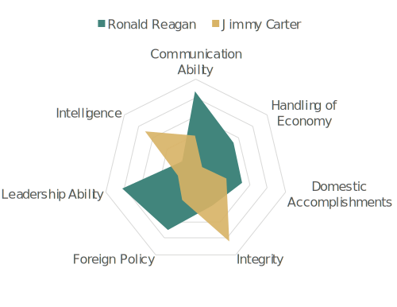

Great presidents aren’t always book smart
Ronald Regan had a background in Hollywood and a degree from a liberal arts school, and somehow made poor Oil-Crisis-Carter look like he didn’t know what he was doing. Good presidents are usually smart but smart presidents aren’t always good.
Deviancy is not a deal breaker

While John F. Kennedy was one of the most beloved presidents of all time, he was also a well-known womanizer. Perhaps it was a different time, but it didn’t change his perception in historian’s eyes or the public’s. Bill Clinton’s approval rating miraculously hit 58 percent during his impeachment. Don’t forget that Trump still clinched the presidency after his infamous hot-mic.
Speeches help a lot, but…
…they aren’t everything. Harry S. Truman didn’t really deliver anything groundbreaking. It’s hard to follow up FDR’s speeches after all. *President Obama , sometimes regarded as the healer-in-chief, splits the list in half.
*His term isn’t over yet.Domestic, foreign and economic policies are key
Actual choices are all that matters to experts. Many people rank George Washington, JFK or Dwight D. Eisenhower as their favorites, but historians rarely care about approval ratings. For example, Lyndon B. Johnson’s expansion of the Vietnam War greatly weighed down his stellar record on civil rights and executive appointments.
Being FDR, not being George W. Bush
Sorry Bush administration fans. The SRI survey lists him among the lowest in nearly every category. Franklin D. Roosevelt scores the highest for his winning-strategies to World War II and the Great Depression. When ranked on characteristics alone, FDR would beat Lincoln and Washington to be the greatest president of all time.